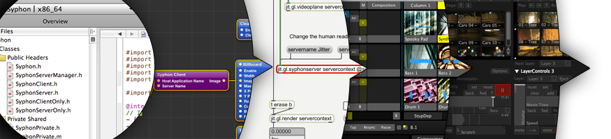

Do I need to install anything to use Syphon?
Some applications have Syphon support built-in (such as VDMX, Modul8, MadMapper and Syphon Recorder). Nothing needs to be installed to use these applications. Other applications and environments need a plugin or extension to use Syphon with them. We provide some and link to others in our implementations list.
What do you mean by Syphon “server”?
A server is a source of video or images. A Syphon “server” makes video or images visible and available to be used by other applications.
What do you mean by Syphon “client”?
A Syphon “client” simply allows one to access video or images made available by a Syphon server.
Does Syphon work over a network or between computers?
No. Syphon works on your computer’s graphics card to share video and images between applications on the same computer.
Other solutions already exist for sharing video between computers. You can use capture devices like Black Magic Intensity, Matrox MXO or Aja Kona cards to digitize uncompressed video from one computer to feed into another. Alternatively, MaxMSP/Jitter has jit.net.send and jit.net.recieve objects.
There are no current plans to provide such features in the framework itself.
Does Syphon work on Windows or Linux?
Currently Syphon only supports MacOS.
The application I am using does not appear to work with Syphon. Is there any way to make it work?
There are two possibilities. First, your application may be able to leverage the Syphon plugins for Quartz Composer or FreeFrame GL. If the application you want to use can load Quartz Composer compositions, the chances are good it will work with our Quartz Composer plugin. If your application supports FreeFrame 1.5 (FreeFrame GL), use our Syphon FFGL plugin. Feel free to report success or failure in our forums.
Second, if the application you want to use has no plugin environment, you can use the Syphon Screen Capture application to capture the screen interactively. The capture is made available to all Syphon Clients. There are some limitations to screen capture, but it can be a viable alternative if native or plugin support is out of the question. Syphon Screen Capture is still under development, but if you are a developer you can build it from our Syphon Implementations SVN.
Lastly, please petition the software’s authors and make them aware of Syphon. We would love to increase mindshare, and native support.
I’m a developer. Can I add Syphon support to my application or environment?
Yes. Integrating Syphon.framework into your own application is super-simple.
Why isn’t it working?
Syphon is designed to be simple to use and most of the time it should “just work”. If it isn’t working for you, try the following:
- Read the Read Me (if it’s a plugin) or check the Help menu or manual (if it’s an application). There may be specific installation or usage instructions.
- Contact the authors of third party software for support with their products (they know much more about their products than we do).
- Search the Github Discussions and Issuyes. Someone may have run into the same problem and had their question answered.
- Ask on the Appropriate Github project.